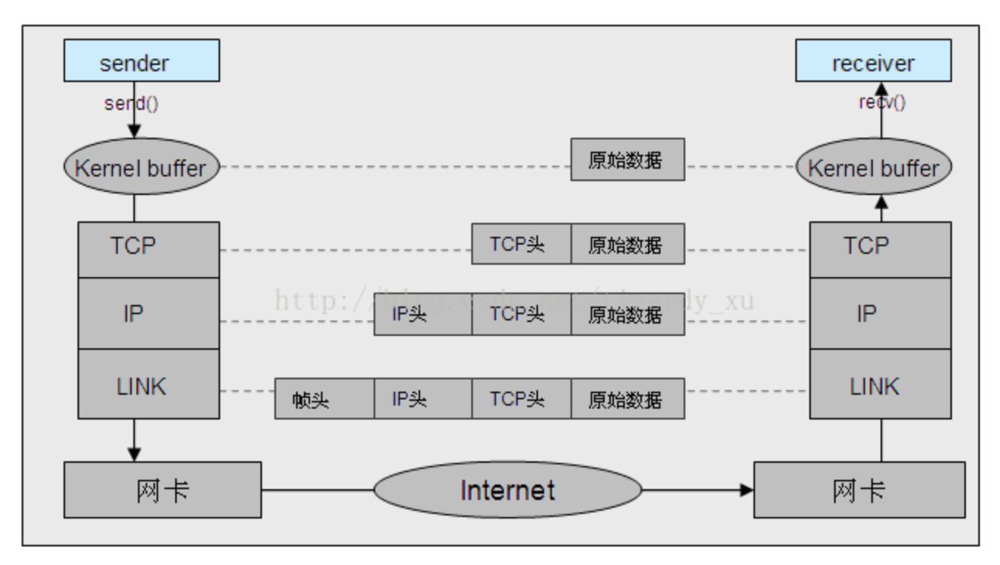
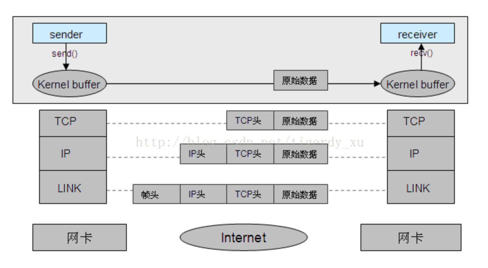

使用 packetdrill 做一些有趣的TCP网络实验！
致谢
笔记的主要来源为 深入理解 TCP 协议：从原理到实战
环境搭建
实验环境 Ubuntu 16.04
安装相关的依赖
1 | sudo apt-get install -y git make bison flex |
下载工具源码
1 | git clone https://github.com/google/packetdrill.git |
修改源码内容：
- 修改文件
gtests/net/packetdrill/netdev.c，注释掉set_device_offload_flags函数以及调用它的地方 - 修改文件
gtests/net/packetdrill/Makefile，去掉最后的-static
编译项目
1 | ./configure |
编译成功的话在此目录下会生成可执行文件 packetdrill ，测试其是否能运行
1 | # sudo ./packetdrill <文件名> |
第一个例子
这个例子中的流程是：
- packetdrill 模拟建立一个虚假的server
- packetdrill 操作协议栈模拟一个client发的报文
- 三次握手建立连接
- server向client发送一段数据
- client主动断开连接
- 四次挥手解除连接
pkt文件如下
1 | 0 socket(..., SOCK_STREAM, IPPROTO_TCP) = 3 |
这里一行一行地分析，顺便复习一下Linux网络编程相关知识
服务端启动
1 | 0 socket(..., SOCK_STREAM, IPPROTO_TCP) = 3 |
表示第0秒，执行系统调用 socket ，并断言获得文件描述符，Linux中文件句柄为整形数字，这里为3，因为之前已经存在了三个默认的文件句柄，分别是标准输入0，标准输出1，错误输出2
对于系统调用 socket ，函数原型如下，可以使用man查看
1 |
|
第一次参数 domain 确定通信的类型，常用的如下
| domain | 描述 |
|---|---|
| AF_INET | IPv4因特网域 |
| AF_INET6 | IPv6因特网域 |
| AF_UNIX | UNIX域 |
| AF_UPSPEC | 未指定 |
对于 AF_INET 和 AF_UNIX 区别详细见这篇文章: AF_INET域与AF_UNIX域socket通信原理对比。
这里摘录一些内容：
AF_INET：跨机器传输数据

AF_UNIX：本机传输数据

第二个参数 type 确定套接字类型，部分类型摘录如下
| 类型 | 描述 |
|---|---|
| SOCK_DGRAM | 固定长度的、无连接的、不可靠的报文传递 |
| SOCK_RAW | IP协议的数据报接口(在POSIX.1中为可选) |
| SOCK_SEQPACKET | 固定长度的、有序的、可靠的、面向连接的报文传递 |
| SOCK_STREAM | 有序的、可靠的、双向的、面向连接的字节流 |
第三个参数 protocol 默认为0表示为给定的域和套接字类型选择默认协议。 AF_INET 中， SOCK_STREAM 默认为TCP（ IPPROTO_TCP ）， SOCK_DGRAM 默认为UDP（ IPPROTO_UDP ）。
在这里第一个参数使用 ... 是指使用默认的类型，也就是 AF_INET。
1 | +0 setsockopt(3, SOL_SOCKET, SO_REUSEADDR, [1], 4) = 0 |
对socket进行设置，地址复用，断言成功，返回值为0，函数原型如下。
1 | int setsockopt(int sockfd, int level, int optname, |
第一个sockfd 为socket的文件句柄，之前已经知道为3，第二个参数 level 根据官方文档，需要填写为 SOL_SOCKET （ To manipulate options at the sockets API level, level is specified as SOL_SOCKET ） ，第三个参数 optval 为设置的参数，这里将其设置为1，表示打开这个配置，最后一个为传入参数的长度， int 类型一般长度为4。
1 | +0 bind(3, ..., ...) = 0 |
表示绑定文件句柄3值指定的IP地址，函数原型如下：
1 | int bind(int sockfd, const struct sockaddr *addr, |
第二、三个参数使用默认值，为本地8080端口，断言执行成功，函数返回0。
1 | +0 listen(3, 1) = 0 |
表示开始监听端口，并将数据输出到文件句柄1，也就是标准输出，断言执行成功，函数返回0。
TCP三次握手
1 | // 三次握手 |
这里就是TCP的三次握手了。
第一行的 < 表示输入的数据包（input packets)， packetdrill 会构造一个真实的数据包，注入到内核协议栈。
之后， S 表示为 SYN 。其他的一些参数如下，这也是tcpdump中的表示方式
| 缩写 | 全称 | 描述 |
|---|---|---|
| S | SYN | 开始同步 |
| S. | SYN+ACK | SYN应答报文 |
| F | FIN | 发送方完成数据发送 |
| F. | FIN+ACK | |
| R | RST | 复位连接 |
| P | PSH | 尽可能快地将数据送往接收进程 |
| . | 以上四个标志比特均置0 |
0:0(0) 冒号前后的两个数据表示数据包起止的index，括号中的为数据包的长度。 win 4000 表示窗口的大小。
尖括号中的值为TCP头部尾部的可选项，对于mss，SYN 包也必须带上自身的 MSS （最大段大小）选项，这里的 MSS 大小为 1000
第二行的 > 表示断言协议栈会立刻回复包的内容，这里断言会返回 SYN+ACK 包，数据包长度为0.
返回的ack值这里是服务端告诉客户端，下一次发数据包是起始的index为1，服务器数据区index为0的地方已经有值了。
至于为什么明明 SYN 数据包长度为0但是却要占一位的原因如下：不占用序列号的段是不需要确认的（都没有内容确认个啥），比如 ACK 段。SYN 段需要对方的确认，需要占用一个序列号。后面讲到四次挥手那里 FIN 包也有同样的情况。
第三行，在0.1秒后向协议栈中压入模拟的报文，完成三次握手。
根据前一个ack的告知，这一次发送的数据包起始index为1，同时由于上一个数据包为 SYN 类型，所以客户端也告知服务端下一次发数据包是起始的index为1。
1 | +0 accept(3, ..., ...) = 4 |
最后，断言 accept 系统调用执行成功，返回句柄4。函数原型如下
1 | int accept(int sockfd, struct sockaddr *addr, socklen_t *addrlen); |
除了第一个传入socket句柄外，别的都使用默认的值。最后获取的句柄4，之后就使用这个句柄于远端的socket进行数据交互。
数据传输
1 | // 服务端发送给客户端10字节数据包 |
就像注释所言，这里的操作是服务端向客户端发送长度为10字节的数据。
第一行使用系统调用写长度为10的数据。
第二行断言协议栈中会产生相应的报文。
第三行模拟客户端返回ask报文，表示数据收到，并告知服务端下一次发送数据的起始index为11
TCP四次挥手
1 | // 客户端主动断开，四次挥手 |
客户端主动断开，四次挥手结束连接。
第一行为 FIN 类型报文，模拟客户端主动断开连接。
第二行为服务端应答报文，表示知道了客户端断开连接的请求。
第三行为服务端执行系统调用 close ，关闭当前文件句柄，结束与远端socket的连接，断言执行成功。
第四行和第五行为服务端通知客户端结束连接。
至此，第一个测试文件分析完毕。
抓包
在使用 packetdrill 测试这份文件前，先启动 tcpdump 进行抓包，命令如下
1 | # -t 表示不输出时间戳 |
也可以加上 -XX 查看报文的原始数据。-c n 可以截取 n 个报文，然后结束
抓包结果如下
1 | IP 192.0.2.1.38285 > bogon.http-alt: Flags [S], seq 0, win 4000, options [mss 100], length 0 |
前三行为三次握手，中间两行为数据传输，最后四行为四次挥手